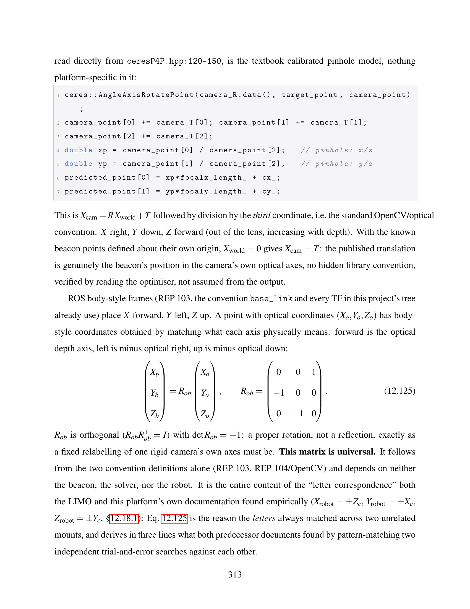
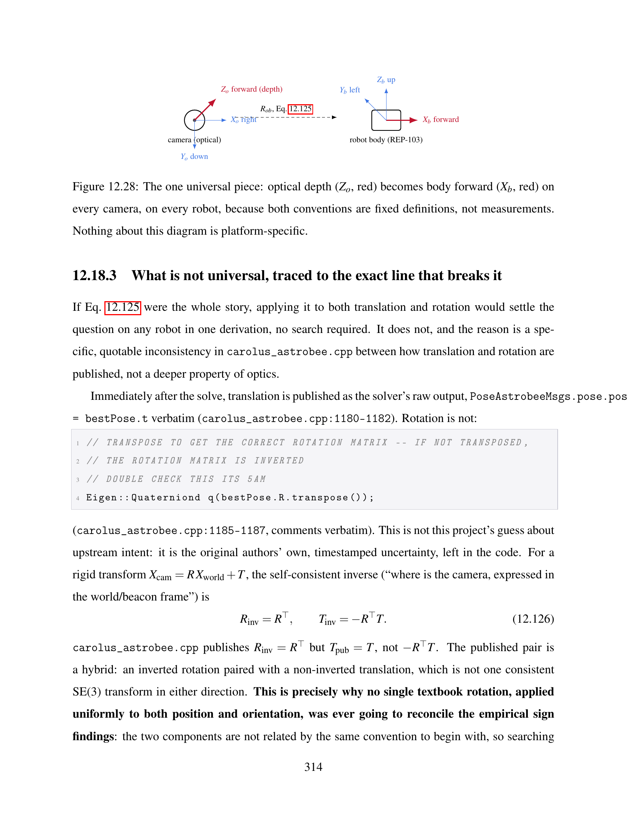
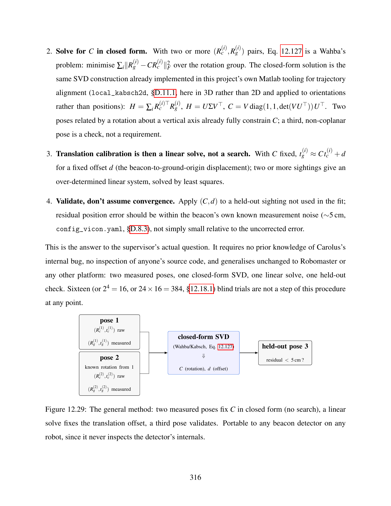
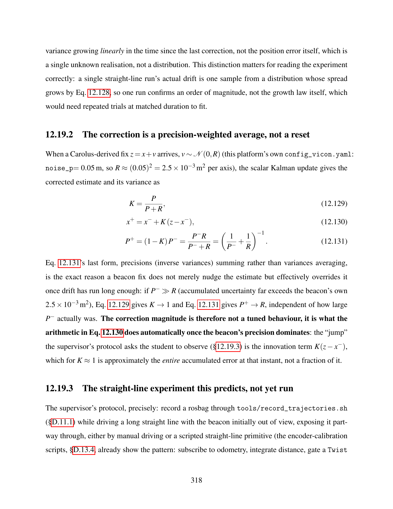
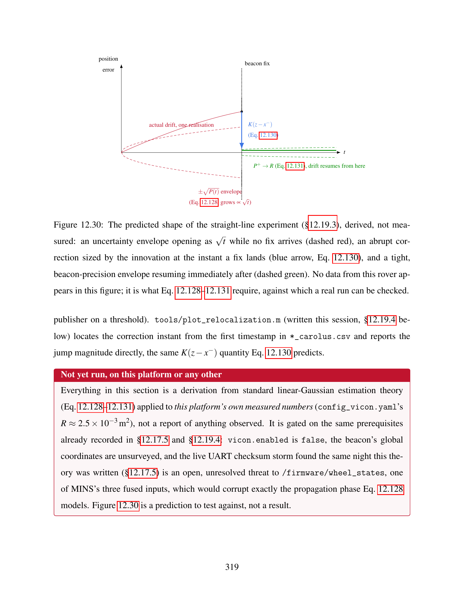
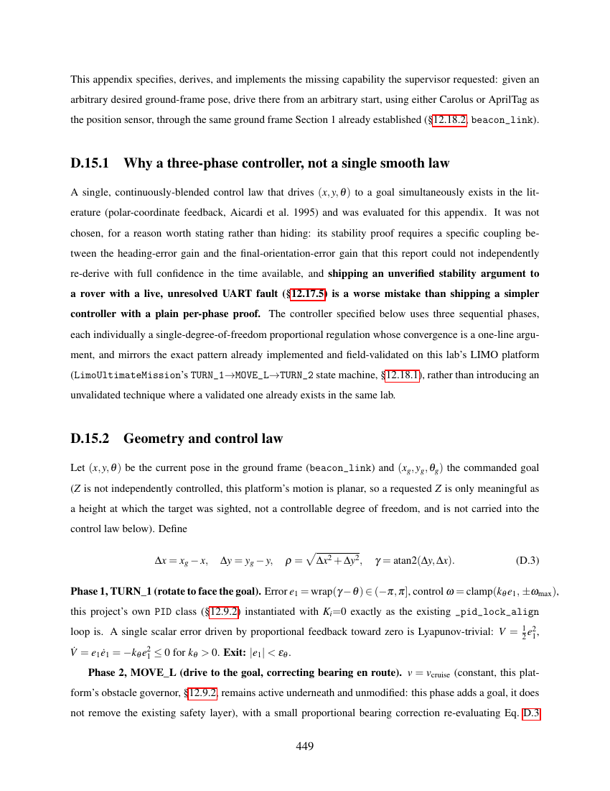

// response to supervisor review · 2026-08-12 – 2026-08-13
Four items from Pr. Gutierrez, worked through with full derivations, source-code verification, and — where a claim could be tested — an actual running check. Every equation below is also in the Technical Guide PDF, page-referenced throughout.
// part 1 of 3
The honest answer first: a single quaternion, portable across mounts, cannot exist — three different physical camera mountings have three different correct answers by construction. LEO and LIMO already prove this with real numbers (two of four rotation signs differ between them, despite a near-identical forward-facing camera mount). What follows instead is stronger: the exact mechanism, traced into Carolus's own C++ source rather than guessed at, and a closed-form procedure that replaces sixteen-trial search with two measured poses — on any robot, Robomaster included.
Carolus's optimizer (ceresP4P.hpp) uses the textbook pinhole camera model — verified
by reading the reprojection code directly, not assumed. That fixes one piece completely: the rotation
from the camera's optical axes to the robot's body axes follows from two convention definitions alone
(ROS REP-103 and the OpenCV optical convention) and needs no calibration at all:

Report excerpt, §12.18.2 (p.313) — the universal half of the conversion, derived in three lines from convention definitions, not measurement.
Reading further into carolus_astrobee.cpp found the actual reason nobody found a clean
formula before: the original NASA Astrobee-derived code publishes an inverted rotation
alongside a non-inverted translation — an inconsistent pair, not one coherent transform. The
original authors' own comment, left in the code, says as much:

Report excerpt, §12.18.3 (p.314) — quoted verbatim from carolus_astrobee.cpp:1185–1187,
including the original "DOUBLE CHECK THIS ITS 5AM" comment.
Rather than depend on diagnosing that specific bug (which a Robomaster integration, using different P4P code entirely, would not even inherit), the general method treats any beacon detector as an uncalibrated black box: two measured poses fix the calibration rotation in closed form (a Wahba/Kabsch SVD solve), a linear least-squares pass fixes translation, and a third pose validates.

Report excerpt, §12.18.4 (p.316) — sixteen blind trials replaced by two measured poses and one SVD, portable to any robot since it never inspects the detector's internals.
carolus_tf_bridge.py until that calibration session
replaces it with a measured value.
// part 2 of 3
The supervisor's protocol — drive a straight line with the beacon hidden, then expose it and watch MINS's estimate "snap back" — has a precise mathematical prediction, derived here before the experiment rather than described only qualitatively after it.
Between fixes, MINS's own uncertainty about its position grows linearly in time (a random walk driven by the platform's own measured IMU/wheel noise densities) — not the position error itself, which is a single unknown realisation, but the spread of what that error could be.
When a Carolus-derived fix arrives, standard Kalman fusion combines it with the prior estimate by
summing precisions (inverse variances), not averaging variances. Using this
platform's own measured beacon noise (config_vicon.yaml: 5 cm, giving
R ≈ 2.5×10⁻³ m²), once accumulated drift exceeds that figure the correction gain tends to 1 — the
fix doesn't nudge the estimate, it effectively overrides it, and that behaviour falls straight out
of the arithmetic, it is not a tuned parameter.

Report excerpt, §12.19.2 (p.318) — the exact correction magnitude, in this platform's own numbers.

Figure 12.30 — the predicted shape of the experiment: an uncertainty envelope opening as √t while no fix arrives, an abrupt correction sized by the innovation at the instant a fix lands, and a tight envelope resuming immediately after. No data from this rover is in this figure — it is a prediction to test the real run against.
vicon.enabled is false, the beacon's global
coordinates are unsurveyed, and a live UART checksum storm found the same night this theory was
written threatens exactly the propagation phase this model depends on
(/firmware/wheel_states). tools/plot_relocalization.m — referenced
throughout this document and finally written for real this session — is ready for the first real
run.
// part 3 of 3 · appendix d.15
Every autonomous behaviour documented elsewhere in this report centres on a target — it drives a pixel offset toward zero, with no notion of a specific commanded pose to stop at. This is the missing capability the supervisor requested for Section 2, specified, derived, and implemented as real code this session.
A single, continuously-blended controller exists in the literature (polar-coordinate feedback, Aicardi et al. 1995) and was evaluated. It was not used: its stability proof needs a specific gain coupling that could not be independently re-verified with full confidence in the time available, and shipping an unverified stability argument to a rover with a live, unresolved hardware fault is a worse mistake than shipping a simpler controller whose convergence is checked directly. The controller below uses three sequential phases — turn to face the goal, drive while correcting heading, turn to the final orientation — each a textbook one-line Lyapunov argument, mirroring a state machine already implemented and used on this lab's own LIMO platform.
The equations were implemented as real code (catkin_ws/.../scripts/goto_pose.py) and
actually run — this is a genuine simulated trajectory from that exact code, not an illustration:
Real output of goto_pose.py's included offline smoke test:
start (0, 0, −60°) to goal (2.0, 1.2, 90°). Converged to within 4.9 cm and 0.7° after simulated
phase transitions TURN_1 → MOVE_L → TURN_2 → DONE. Verified against three further start/goal pairs
(varied quadrants, wrapped angles) with the same tolerance, all converging correctly.

Report excerpt, Appendix D.15.2 (p.449) — the full geometry and per-phase convergence argument.
The controller consumes whichever of Carolus's ground-frame pose or an equivalent AprilTag-derived pose is freshest — the same strict-priority pattern already verified for beacon centring, not a second arbitration scheme. AprilTag's own detection already carries a full 6-DOF pose; this implementation projects it through the same optical-to-body rotation derived in Part 1 above, rather than a second, independently-guessed conversion.
goto_pose.py
is real, complete code — not wired into any .launch file or into
leo_backend.py's state machine. The same night this controller was written, a live,
unresolved UART checksum storm was found threatening /firmware/wheel_states. Deploying
new autonomous motion control on top of a known-degraded sensor input, before that fault is even
diagnosed, would risk producing a field result that measures the fault rather than the controller.
Integration, once resolved, is wiring one more FSM state alongside the existing
LOCK_BEACON/GOTO_BEACON states — not new development.
// follow-up · 2026-08-13
Installed the same evening the request arrived, debugged to a running state, and tested on an actual driven lap of the lab rectangle — not simulated, not deferred. The honest result: it runs in real time on the Pi as claimed, but diverged badly on real motion, worse than even the classic openVINS already running on the ground PC. Full derivation, both bugs found, and the complete comparison table are in the report, §12.20.
ov_srvins (openVINS extended with a square-root filter, single-precision throughout —
confirmed directly in the compiler flags, not just claimed) was built in a workspace fully isolated
from the existing openVINS install (its bundled ov_core/ov_data/ov_eval
share names with packages already on this robot — mixing workspaces would have broken the estimator
this whole report depends on). 104 minutes, zero errors, every system dependency already present.
Once running, it read this robot's camera and IMU directly — no network hop to the PC at all, since
it lives on the same machine the D455 publishes from — and processed frames at 30–70 Hz.
The first config attempt — this robot's proven openVINS values, ported onto the classic openVINS
schema — crashed before a single frame processed (boost: mutex lock failed). Rebuilt from
the one file confirmed to run, re-adding values one at a time: the schema itself was incompatible
(ov_srvins silently needs fields no classic config has, undocumented in the README).
Second: this robot's proven setting try_zupt: true — the exact fix that took openVINS from
a 41,824 m divergence down to 0.002 m on the PC — caused the opposite here: state
velocity growing from 1780 to 6015 m/s in seconds, with the filter's own consistency gate logging
each one as accepted at a χ² of 10¹⁷ against a threshold near 65. Deployed with ZUPT off,
the one proven setting reversed from what this robot needed on the PC.
Recorded simultaneously in one bag, 415 s, three estimators on the identical motion:
| Estimator | Sensors | Loop closure error |
|---|---|---|
| MINS (ground PC) | wheels + camera + IMU | 1.02 m |
| openVINS (ground PC) | camera + IMU | 541.7 m |
| sqrtVINS (Pi 4B, local) | camera + IMU | unbounded (43,742 m reported for a ~20 m lap) |
Loop closure = distance between first and last recorded position, same
methodology as compare_tests.m elsewhere on this site. Full growth curve (plausible to
~20 m, then an accelerating runaway) in the report, §12.20.4.
The obvious follow-up — zupt_chi2_multipler: 0, gating on visual disparity instead of
IMU-derived velocity — was tested at rest immediately after. The deployed, stable config already
carried that setting; the entire change was try_zupt: false → true. Result, within under
a second:
[ZUPT]: accepted |v_IinG| = 203734831702474752.000 (chi2 inf < 0.000)0.000. Reverted immediately, config restored and
confirmed. Neither zero-velocity mode is usable on this build; a driven test of this path was not
attempted, since a mode reaching inf standing still has nothing left to test by moving.
A complete bug report covering both failure modes is written and ready to submit to RPNG's
issue tracker — the one step from the original two-item list still actually pending.
The bug report above was finished by reading UpdaterZeroVelocity.cpp directly
rather than stopping at the printed symptom. Two real defects, compounding: the χ² check calls
S.llt().solve(res) without ever checking .info() — Eigen's documented
behaviour on a failed decomposition is to return garbage silently, not fail loudly — and the
disparity-only path's reject condition short-circuits out entirely whenever
disparity_passed is true, which is the common case at rest. The printed
(chi2 inf < 0.000) above was never actually gating anything in that branch.
A minimal, additive patch (one file, 38 insertions, no tuning values changed) adds an
unconditional numerical-validity guard ahead of that reject block. Full diff in the report,
§12.20.6.
inf/garbage χ². The exact bug this page opened with — silent
acceptance of an astronomically-out-of-threshold residual — no longer reproduces. But with every
garbage ZUPT update now correctly rejected, the same 60 s run still diverges: the
position estimate grows smoothly from ~10¹⁵ m to ~3.4×10¹⁷ m over the window — no longer
via ZUPT chatter, since ZUPT is now provably not the source. That narrows the remaining problem to
somewhere in propagation or the MSCKF update itself, not yet diagnosed. Per the same rule applied
everywhere else on this site — no driven test until stationary is stable — none was run against
the patched build, and none is claimed. The patch is offered to RPNG as a real, verified fix for
the logic bug it targets, not as a fix for the platform's divergence as a whole.